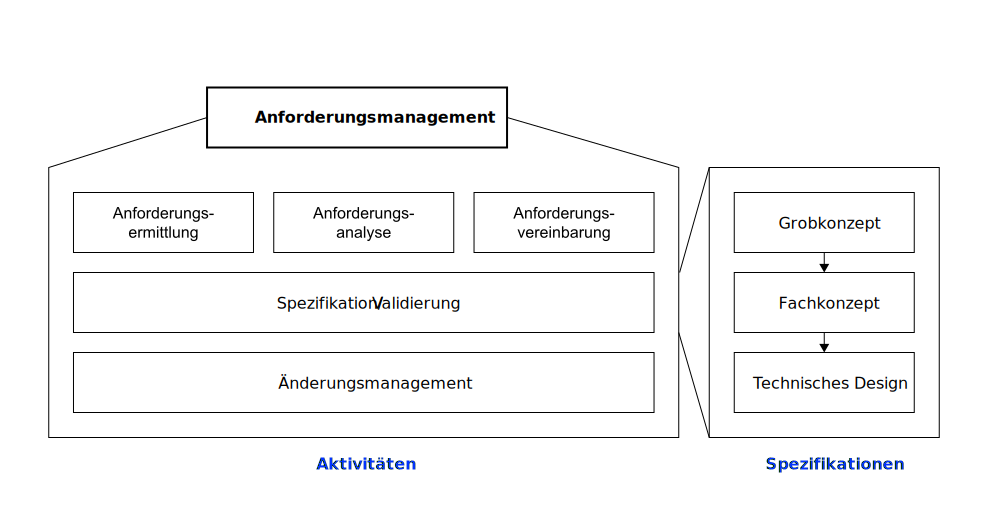
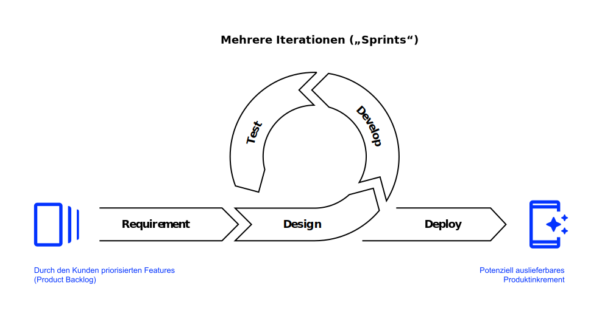
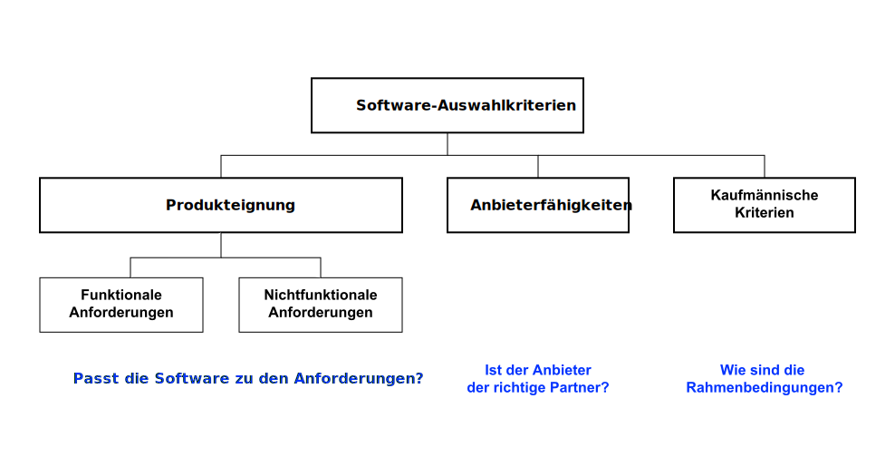

K9 Implementierung
Wie entstehen Informationssysteme?
Neu-Ulm University of Applied Sciences
1. Februar 2023
Motivation
We‘ve minimized the economic impact of the defects of the system via an advanced business process called ‘hoping nobody notices’. Dilbert, merican comic strip written and illustrated by Scott Adams
As a rule, software systems do not work well until they have been used, and have failed repeatedly, in real applications. David Parnas, early pioneer of software engineering and professor of computer science
Lernergebnisse 🎯
Nach dieser Einheit
- verstehen Sie, weshalb Modelle für die Entwicklung und Anpassung von Anwendungssystemen notwendig sind,
- können Sie den Anwendungslebenszyklus beschreiben,
- kennen Sie erste Herausforderungen in der fachlichen Konzeption von Anwendungssystemen sowie Ansätze zum Umgang mit diesen,
- verstehen Sie Grundsätze der linearen Phasen-basierten sowie der agilen Methoden zur Entwicklung von Individualsoftware erläutern und
- können Sie den Auswahl- und Einführungsprozess von Standardsoftware beschreiben
Einleitung
Für viele Bereiche sind Anwendungen am Markt erhältlich, mit der die fachlichen Anforderungen vieler Unternehmen abgedeckt werden können — sogenannte Standardsoftware (Mertens u. a. 2016).
Sind die Anforderungen des Unternehmens sehr spezifisch, so muss die Standardsoftware modifiziert bzw. erweitert werden.
Ist das nicht möglich, ist die Entwicklung eines unternehmensspezifischen Anwendungssystems erforderlich — sogenannte Individualsoftware (Mertens u. a. 2016).
Anwendungslebenszyklus
Der Lebenszyklus von betrieblichen Anwendungssystemen überspannt den Zeitraum zwischen der ursprünglichen Idee über die Entwicklung und Einführung, sowie die Wartung und evtl. Weiterentwicklung bis hin zur Ablösung (Krcmar 2015).
Angesichts der relativ langen Lebensdauer von betrieblichen Anwendungen muss der Lebenszyklus systematisch gesteuert werden.
Der Anwendungslebenszyklus wird im Allgemeinen in sechs Phasen unterteilt: Entwicklung, Einführung, Wachstum,Sättigung/Reife, Rückgang und Abschaffung (Heinrich und Lehner 2005).
Visualisierung

Anforderungsmanagement
Vor der Auswahl einer Standardsoftware bzw. der Entwicklung einer Individualsoftware sowie deren Einführung eines Systems müssen die Anforderungen unternehmensspezifisch erhoben werden (Krcmar 2015).
Informationssysteme sind soziotechnische Systeme. Deshalb müssen neben den technischen Anforderungen auch Anforderungen an die nicht-technischen Komponenten formuliert werden (insbesondere die zu gestaltenden Prozesse).
Das Anforderungsmanagement ist eine systematische Vorgehensweise, um alle relevanten Anforderungen zu ermitteln, zu analysieren, zu vereinbaren, zu spezifizieren, zu validieren, im Projekt zu verfolgen und gegebenenfalls zu ändern (Ebert 2019).
Notwendigkeit

Anforderungsarten
Die Anforderungen an ein zu entwickelndes System können in funktionale und nichtfunktionale Anforderungen unterschieden werden.
- Funktionale Anforderungen
- Diese beschreiben das Verhalten und die Funktionen des Systems und geben an, was das zu System leisten soll (bspw. Funktionsumfang, UI/UX, Datenstrukturen, Integrationsmöglichkeiten).
- Nichtfunktionale Anforderungen
- Diese beschreiben, wie gut funktionale Anforderungen durch das System realisiert werden sollen (bspw. die Reaktionszeit, Verfügbarkeit, Sicherheit).
Visualisierung

Aktivitäten

Spezifikation
Die Form der Beschreibung wird mit zunehmendem Detaillierungsgrad immer formaler bis hin zu einer detaillierten technischen Spezifikation (Modelle).
- Grobkonzept
- Semi-formale Beschreibung der fachlichen Anforderungen und Grenzen auf hohem Niveau
- Fachkonzept
- Detaillierte Ausformulierung der fachlichen Anforderungen inkl. formaler Modelle („Lastenheft“)
- Technisches Design
- Formaler Systementwurf mit allen systemseitig notwendigen Festlegungen und Eingrenzungen
Software-Entwicklung
Der Erfolg einer Anwendungsentwicklung hängt wesentlich davon ab, wie gut die einzelnen Schritte des Projektes geplant, wie gut Probleme vorhergesehen und mögliche Lösungen vorbereitet werden (Krcmar 2015).
In der Praxis werden in der Software-Entwicklung zwei verschiedene Typen von Vorgehensmodellen verwendet:
- Lineare Phasenmodelle: Grundprinzip ist die Abgrenzung einzelner Phasen durch Meilensteine. Die Phasen werden sequenziell durchlaufen, Rücksprünge in vorangegangene Phasen sind nur dann vorgesehen, wenn festgestellt wird, dass gesteckte Ziele sonst nicht erreicht werden.
- Agile, iterative Vorgehensmodelle: Die Wiederholung von vorangegangenen Arbeitsschritten ist ausdrücklich vorgesehen.
Lineare Phasenmodelle
Die linearen Phasenmodelle zerlegen den Entwicklungsprozess in aufeinanderfolgende Spezifikationsschritte.
Die einzelnen Teilschritte schließen jeweils mit einem nachzuweisenden Ergebnis ab, das den Input für die nächste Phase bildet. Deshalb wird dieses Modelle auch oft als Wasserfall-Modell bezeichnet.
Falls Probleme auftauchen, für die Entscheidungen in vorigen Phasen ursächlich sind, muss in die Phase zurückgesprungen werden, in der diese getroffen wurden. Die Fehlerbeseitigung kann dann aufwändig sein.
Visualisierung

Agile, iterative Ansätze
Agile Ansätze umfassen wiederholt ablaufende Aktivitäten, an deren Ende jeweils ein messbares Teilergebnis, d. h. eine teilfertige und nutzbare Version des zu erstellenden Systems, als Grundlage für nachfolgende Iterationen steht (Mertens u. a. 2016).
- Als Basis der Umsetzung dient in der Regel eine fachliche Anforderungsdefinition („User Story“), die in einzelne logisch zusammengehörende Arbeitspakete unterteilt wird.
- Die Kommunikation zwischen den Entwicklern und mit den späteren Nutzern der Software ist ein wichtiges Element. Wenn möglich, sollen die teilfertigen Versionen schnell eingeführt und schrittweise ergänzt werden.
- Ein Beispiel für ein solchen Ansatz ist SCRUM.
Visualisierung

Software-Einführung
Projekte zum Einführen von Standardsoftware dauern zumeist mehrere Monate. Die Einführungskosten, insbesondere Personalkosten, übersteigen dabei meistens deutlich die Kosten für die Software (insbesondere Lizenzkosten) (Mertens u. a. 2016).
Auch bei der Einführung von Standardsoftware ist ein erhebliches fachliches Verständnis für die zu unterstützenden betrieblichen Funktionen und Prozesse notwendig.
Projekte zum Einführen von Standardsoftware laufen vergleichbar der Individualentwicklung in Phasen ab.
Analog zur Entwicklung von Individualsoftware existieren verschiedene phasenorientierte Vorgehensmodelle. Allen gemein sind drei Grundphasen: die Auswahl, die Einführung sowie der Betrieb der Software.
Phasenmodell

Bei der Anpassung unterscheidet man zwischen Customizing und Parametrisierung. Im Rahmen des Customizing werden Eigenschaften der Software in der Regel per Programmierung angepasst, im Rahmen der Parametrisierung werden vorhandene Einstellungsmöglichkeiten des Systems zur Anpassung verwendet.
Produktauswahl

Auswahlkriterien

Lizenzmodelle
Die in der Praxis vorkommenden Lizenzmodelle für kommerzielle Anwendungssysteme unterscheiden sich hauptsächlich in den Bezugsgrößen, die für die Ermittlung der Lizenzkosten herangezogen werden (Krcmar 2015):
- Nutzerbezogene Modelle—Bezugsgröße ist in der Regel die Anzahl der Nutzer (Lizenzkosten pro Nutzer)
- Wertbezogene Modelle—Bezugsgröße können Personalbestand, Herstellkosten oder verkaufte Produkte sein (z.B. Umsatzbeteiligung in einem Webshop)
- Zeitbezogene Modelle—Bezugsgröße ist die Dauer der Nutzung (Subskription)
- Infrastrukturbezogene Modelle—Bezugsgröße ist das Ausmaß der Nutzung der Infrastruktur (bspw. IaaS nach Prozessor- oder Speichernutzung, Lizenzkosten pro Gerät)
Übungen ✏️
Anforderungserhebung
Stellen Sie sich vor, Sie sind an der HNU angestellt und leiten das Projekt zur Einführung einer neuen E-Learning-Plattform. Ihre erste Aufgabe ist die Erstellung eines Grobkonzeptes.
- Wie würden Sie vorgehen und wen würden Sie einbinden?
- Was wären mögliche Anforderungen?
- Ergänzen Sie Ihre Anforderungsliste um mögliche Anforderer.
- Markieren Sie funktionale und nicht-funktionale Anforderungen.
- Bewerten Sie die Anforderungen auf Ihrer Liste nach Wichtigkeit. Welche Probleme ergeben sich daraus? Sehen Sie Zielkonflikte?
- Würden Sie sich für die Einführung einer Standard- oder einer Individualsoftware entscheiden? Warum?
- Welche speziellen Anforderungen gäbe es bei der Entwicklung einer Individualsoftware zu berücksichtigen?
- Welche Lizenzmodelle würden Sie bei einer Standardsoftware bevorzugen?
Agile Vorgehensmodelle
Um die Nachteile des Wasserfallmodells zu vermeiden, werden in vielen Unternehmen mittlerweile verstärkt agile Vorgehensmodelle eingesetzt. Diese sind als Gegenentwurf zu den traditionellen Vorgehensmodellen entstanden und zielen unter anderem darauf ab, auf Anforderungsänderungen schnell reagieren zu können. Die verschiedenen agilen Vorgehensmodelle basieren auf denselben Prinzipien und weisen Gemeinsamkeiten im Vorgehen auf.
- Recherchieren Sie zu diesen agilen Vorgehensmodellen.
- Fassen Sie die wesentlichen Prinzipien sowie die aus Ihrer Sicht wichtigsten Vorteile zum Wasserfallmodell in eigenen Worten zusammen.
Kosten von Anwendungssystemen
Recherchieren Sie die Kosten für die Entwicklung der deutschen “Corona Warn App”.
- Listen Sie die Kosten (jährlich oder für einen definierten Zeitraum)
- Wie ist das Verhältnis von Entwicklungskosten zu Betriebs-und Wartungskosten?
- Welche Konsequenzen können Sie daraus für die Entwicklung von Individualsoftware ableiten?